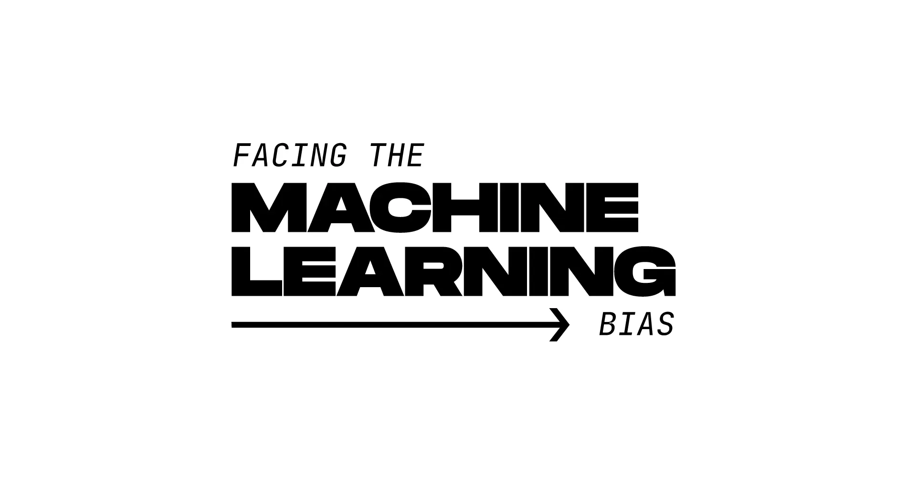
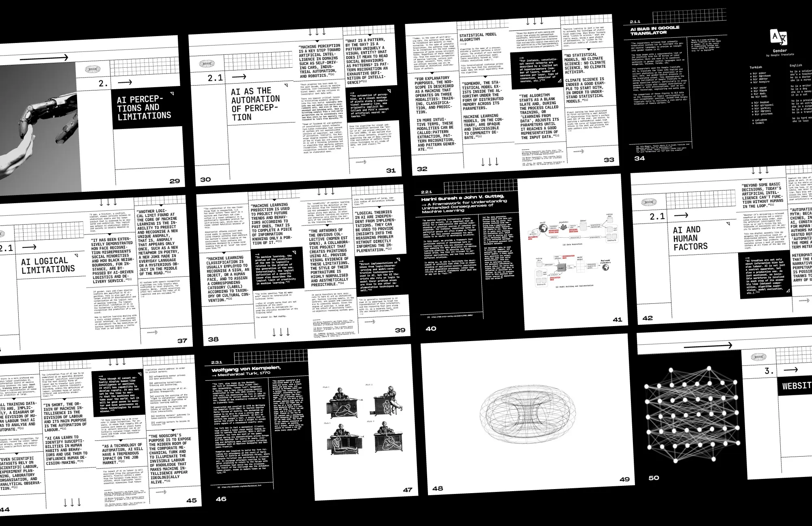
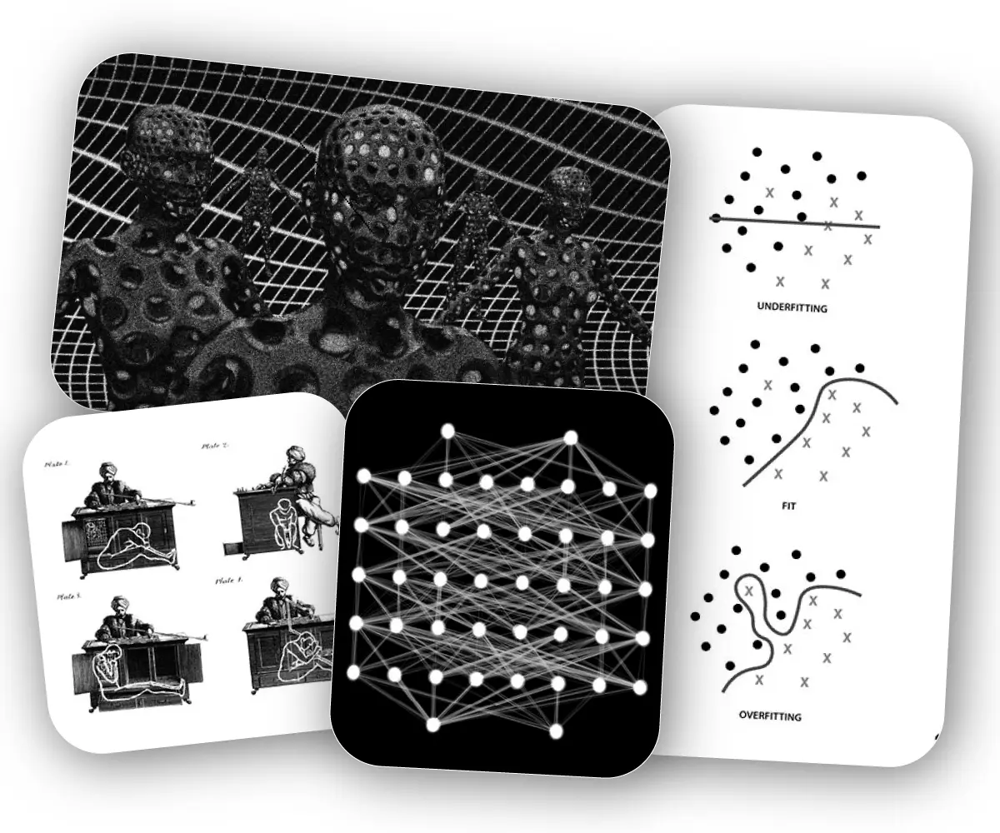

The increasing use of artificial intelligence (AI) systems is currently impacting various spheres of contemporary society, from online media to finance, politics, healthcare, or education, leaving few areas untouched. These systems are mostly based on machine learning (ML) algorithms that learn to make decisions towards a particular end, from vast sets of training data. As such, the development of these techniques has grown exponentially with the spread of the Internet and the expansion of social networks. These systems become virtually ubiquitous, broadening the debate about their implications for society.
As we delegate capabilities such as reasoning, learning, pattern recognition, inference or deduction to these systems, the opacity inherent to their complexity often obscures the biases incorporated in their training data or decision-making processes.
The project “Computer says no” takes as its title an expression that satirizes this opacity, seeking to reveal the hidden biases of machine learning. Developed as an evolving, diagrammatic narrative, presented on a website, the project breaks down how human, social, and cultural biases are embedded in training datasets and amplified in the machine learning process.
This approach seeks to promote an informed reflection on the role of the process “biased data in, biased data out” in the propagation of inequalities and forms of social discrimination, considering that, as Kate Crawford explains, “Data and data sets are not objective; they are creations of human design. We give numbers their voice, draw inferences from them, and define their meaning through our interpretations”.
keywords:
- Machine learning, artificial intelligence, training data, human labeling, algorithmic bias

